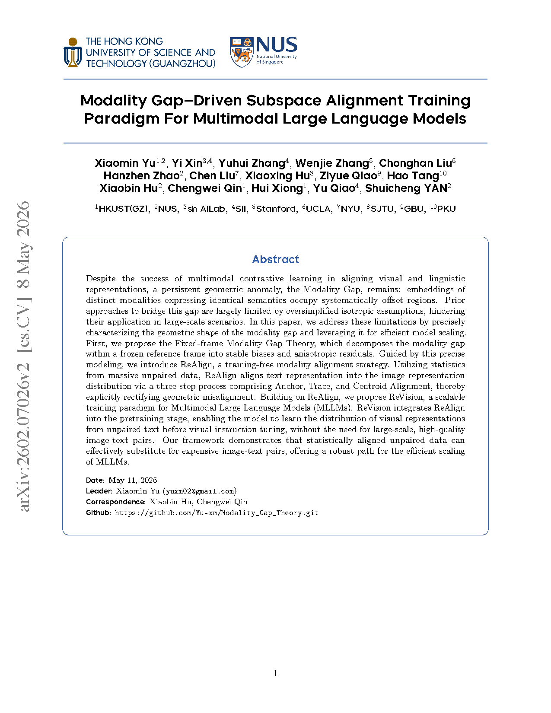
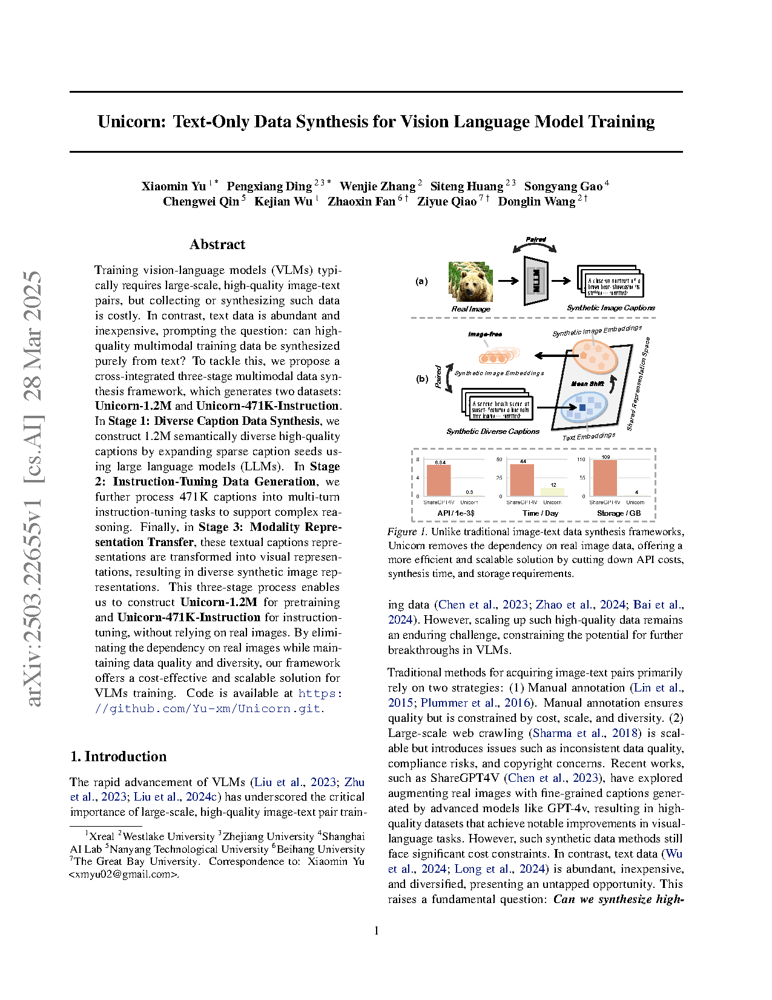
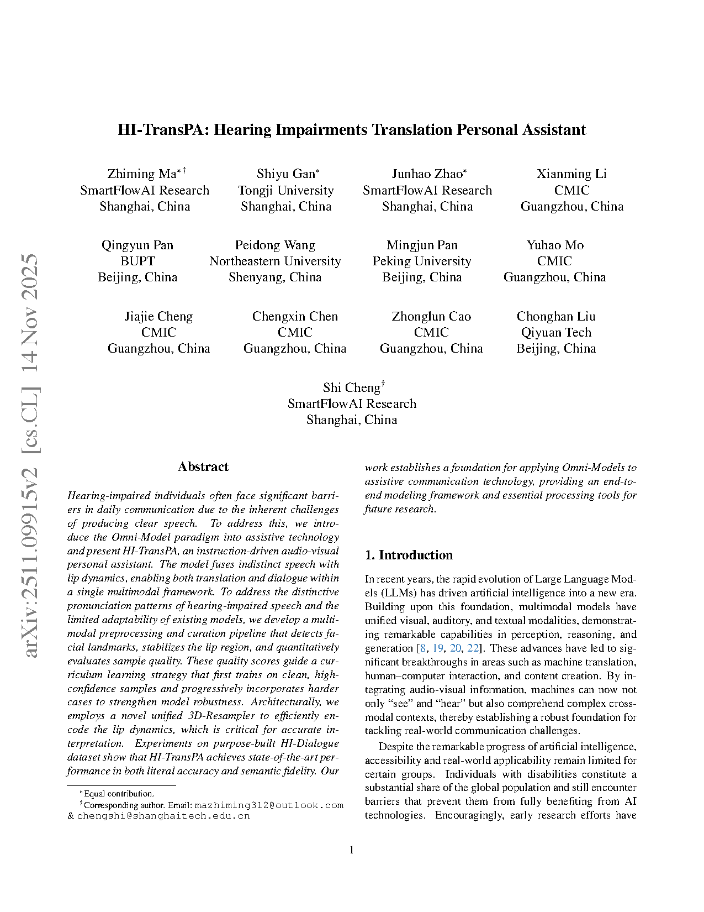

| Rethinking LLM Ensembling from the Perspective of Mixture Models Spotlight
Jiale Fu, Yuchu Jiang, Chonghan Liu, Joey Tianyi Zhou, Xu Yang
The Forty-third International Conference on Machine Learning (ICML), 2026
[paper] |
 | Ariadne: A Controllable Framework for Probing and Extending VLM Reasoning Boundaries Poster
Minghe Shen, Zhuo Zhi, Chonghan Liu, Shuo Xing, Zhengzhong Tu, Che Liu
Proceedings of the Association for Computational Linguistics (ACL Main), 2026
[paper] |
 | d²Cache: Accelerating Diffusion-Based LLMs via Dual Adaptive Caching Poster
Yuchu Jiang, Yue Cai, Xiangzhong Luo, Jiale Fu, Jiarui Wang, Chonghan Liu, Xu Yang
The Fourteenth International Conference on Learning Representations (ICLR), 2026
[paper] [code] |
 | Flatter Tokens are More Valuable for Speculative Draft Model Training Poster
Jiaming Fan, Cao Daming, Xiangzhong Luo, Jiale Fu, Chonghan Liu, Xu Yang
The Fourteenth International Conference on Learning Representations (ICLR), 2026
[paper] |
 | AdaptiveStep: Automatically Dividing Reasoning Step through Model Confidence Poster
Yuliang Liu, Junjie Lu, Zhaoling Chen, Chaofeng Qu, Jason Klein Liu, Chonghan Liu, Zefan Cai, Yunhui Xia, Li Zhao, Jiang Bian, Chuheng Zhang, Wei Shen, Zhouhan Lin
The Forty-second International Conference on Machine Learning (ICML), 2025
[paper] |
 | Modality Gap-Driven Subspace Alignment Training Paradigm For Multimodal Large Language Models
Xun Yu, Yixin Xin, Wenzhuo Zhang, Chonghan Liu, Hao Zhao, Xianghao Hu, Xiaoyu Yu, Zheqi Qiao, Haitao Tang, Xu Yang, ...
arXiv preprint arXiv:2602.07026, 2026
[paper] |
 | VEPO: Variable Entropy Policy Optimization for Low-Resource Language Foundation Models
Chonghan Liu, Yimin Du, Qi An, Xin He, Cunqi Zhai, Fei Tan, Weijia Lin, Xiaochun Gong, Yongchao Deng, Shousheng Jia, ...
arXiv preprint arXiv:2603.19152, 2026
[paper] |
 | Mirage: A Multi-modal Benchmark for Spatial Perception, Reasoning, and Intelligence
Chonghan Liu, Haoran Wang, Frank Henry, Peng Miao, Yifan Zhang, Yue Zhao, Peiran Wu
arXiv preprint arXiv:2505.10604, 2025
[paper] |
 | Unicorn: Text-only Data Synthesis for Vision Language Model Training
Xun Yu, Peida Ding, Wenzhuo Zhang, Shanshan Huang, Siyuan Gao, Chaofeng Qin, Kaiwu Wu, Zhifan Fan, Zheqi Qiao, ...
arXiv preprint arXiv:2503.22655, 2025
[paper] |
 | HI-TransPA: Hearing Impairments Translation Personal Assistant
Zhiyu Ma, Siyuan Gan, Jiazhao Zhao, Xingyuan Li, Qingrui Pan, Pingchuan Wang, Mingpan Pan, Yanming Mo, Jiantao Cheng, ...
arXiv preprint arXiv:2511.09915, 2025
[paper] |